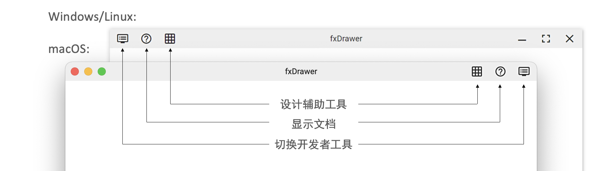
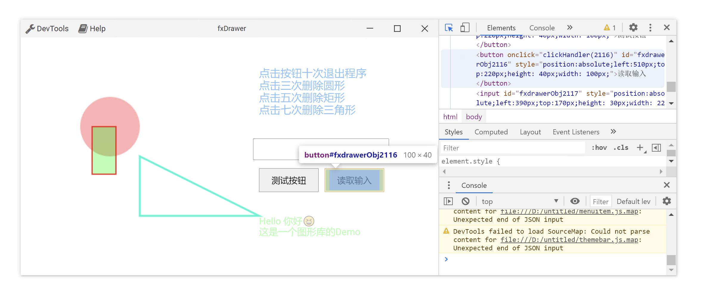
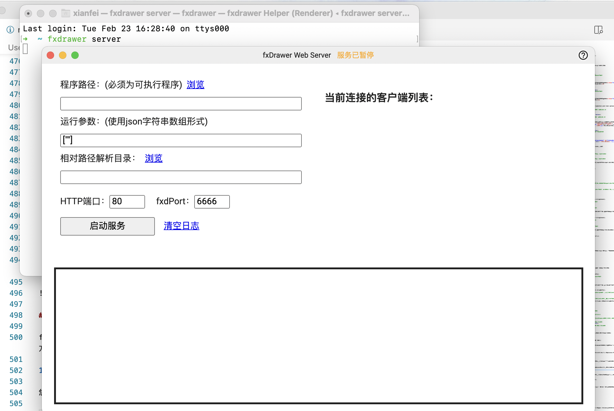
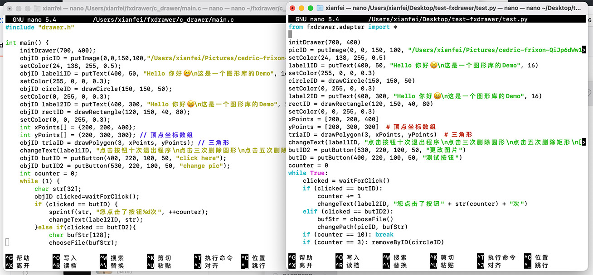
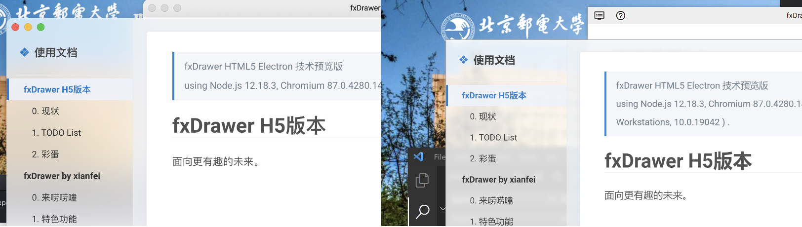

fxDrawer HTML5 Electron 技术预览版 v0.1.2
using Node.js , Chromium , and Electron on .
一个跨语言跨平台绘图器/图形库，可以当做是一个交互增强版的先进ege/easyx。设计思想类似于ege/easyx，但是支持交互、高分屏、触摸操作等现代GUI技术特性。此版本基于Electron框架开发，这是一个很新的技术框架，Electron在近些年的新软件中很受欢迎，VSCode、GitHub Desktop、Microsoft Teams以及macOS上的百度网盘都是使用该框架开发的。fxDrawer在该框架下也有很大的改进空间，可以增加更多有趣的功能。fxDrawer是一个开源项目，也欢迎大家参与到fxDrawer开发与改进当中。
程序介绍
该图形库除了能像图形库一样在编程语言中使用外，还附带了设计辅助工具、开发者工具等工具。在不同操作系统下的UI及使用方式几乎一致，详情请看文档相对应部分。

API 文档
绘制函数通常会返回objID，保存此objID即可在之后对此对象进行操作。如果之后不需要对这个对象进行操作，可不保存objID。其中removeByID(objID id)函数对所有返回objID的绘制对象均有效。
此处使用C语言API作为示范，Python上与大体其一致，只是下文中接受参数char* stringBuffer改为返回字符串，接受参数会少一个。
控制相关
- 初始化绘图器
int initDrawer(int width, int height);// width : 创建窗口宽度// height : 创建窗口高度// 返回值：sd numberxxxxxxxxxxdef initDrawer(width,height)# width : 创建窗口宽度# height : 创建窗口高度用于初始化绘图器，接受参数为绘图窗口的宽度和高度。
- 关闭绘图器
xxxxxxxxxxvoid closeDrawer();xxxxxxxxxxdef closeDrawer()- 设置颜色
xxxxxxxxxxvoid setColor(int r, int g, int b, double a);// r : 红色分量，区间为0-255// g : 绿色分量，区间为0-255// b : 蓝色分量，区间为0-255// a : 透明度，区间为0.0-1.0，0.0为全透明，1.0为不透明void setColorW(const char* color);// color : web格式色彩，可使用内建的fxColor开头的色彩常量。详情请见'色彩常量'xxxxxxxxxxdef setColor(r, g, b, a):# r : rgb颜色红色分量，参数范围0-255# g : rgb颜色绿色分量，参数范围0-255# b : rgb颜色蓝色分量，参数范围0-255# a : 透明度；区间为0.0-1.0，0.0为全透明，1.0为不透明def setColorW(color);# color : web格式色彩，可使用内建的fxColor开头的色彩常量。详情请见'色彩常量'用于设置绘图器将要绘图的颜色，RGBa格式，其中色彩分量RGB范围0-255，透明度a范围0-1。
- 设置描边
xxxxxxxxxxvoid setStroke(int r, int g, int b, double a, double width);// r : 红色分量，区间为0-255// g : 绿色分量，区间为0-255// b : 蓝色分量，区间为0-255// a : 透明度，区间为0.0-1.0，0.0为全透明，1.0为不透明// width : 描边宽度，单位为像素void setStrokeW(const char* color, double width);// color : web格式色彩，可使用内建的fxColor开头的色彩常量。详情请见'色彩常量'// width : 描边宽度，单位为像素xxxxxxxxxxdef setStroke(r, g, b, a, width):# r : rgb颜色红色分量，参数范围0-255# g : rgb颜色绿色分量，参数范围0-255# b : rgb颜色蓝色分量，参数范围0-255# a : 透明度；区间为0.0-1.0，0.0为全透明，1.0为不透明# width : 描边宽度，单位为像素def setStrokeW(const char* color, double width);# color : web格式色彩，可使用内建的fxColor开头的色彩常量。详情请见'色彩常量'# width : 描边宽度，单位为像素用于设置绘图器将要绘制图形并描边（仅限draw打头的绘制函数使用），RGBa格式，其中色彩分量RGB范围0-255，透明度a范围0-1，width是描边宽度。不描边时可将后两个值的任意一个设置为0.0即可。
绘制图形相关
- 绘制圆形
xxxxxxxxxxobjID drawCircle(int x, int y, int radius);// x : 圆的横坐标// y : 圆的纵坐标// radius : 圆的半径// 返回值：objIDxxxxxxxxxxdef drawCircle(x, y, radius):# x : 圆的横坐标# y : 圆的纵坐标# radius : 圆的半径# 返回值：objID绘制一个圆，参数为坐标及半径，返回对象的引用ID。
- 绘制矩形
xxxxxxxxxxobjID drawRectangle(int x, int y, int width, int height);// x : 矩形的横坐标// y : 矩形的纵坐标// weidth : 矩形的宽// height : 矩形的高// 返回值：objIDxxxxxxxxxxdef drawRectangle(x, y, weidth, height):# x : 矩形的横坐标# y : 矩形的纵坐标# weidth : 矩形的宽# height : 矩形的高# 返回值：objID，一个整数绘制一个矩形，参数为坐标及宽高，返回对象的引用ID。
- 绘制n边形
xxxxxxxxxxobjID drawPolygon(int numberOfPoints, int *xArray, int *yArray);// numberOfPoints : 多边形定点数// xArray : 顶点x坐标数组// yArray : 顶点y坐标数组// 返回值：objIDxxxxxxxxxxdef drawPolygon(numberOfPoints, xArray, yArray):# numberOfPoints : 多边形定点数# xArray : 顶点x坐标数组# yArray : 顶点y坐标数组# 返回值：objID，一个整数绘制一个多边形，参数为顶点数、顶点x/y坐标数组，返回对象的引用ID。
- 绘制点
xxxxxxxxxxobjID drawPoint(int x, int y, int radius, int smooth);// x : 圆的横坐标// y : 圆的纵坐标// radius : 圆的半径// smooth： 平滑阈值，0为关闭，此设置为用来平滑的最大距离。可以自行尝试体会一下xxxxxxxxxxdef drawPoint(x, y, radius, smooth):# x : 圆的横坐标# y : 圆的纵坐标# radius : 圆的半径# smooth： 平滑阈值，0为关闭，此设置为用来平滑的最大距离。可以自行尝试体会一下绘制一个点，参数为坐标及半径以及平滑阈值
放置组件相关
- 放置文字
xxxxxxxxxxobjID putText(int x,int y,const char* stringContext,double size);// x : 放置文字的横坐标// y : 放置文字的纵坐标// stringContext : 存放待放置文字的字符串// size : 放置文字的字体大小// 返回值：objIDxxxxxxxxxxdef putText(x, y, stringContext, size):# x : 放置文字的横坐标# y : 放置文字的纵坐标# stringContext : 存放待放置文字的字符串# size : 放置文字的字体大小# 返回值：objID，一个整数在给定的坐标处放置一段文字，其中size为字体大小，返回对象的引用ID。
- 放置按钮
xxxxxxxxxxobjID putButton(int x, int y, int width, int height,const char* stringContext);// x : 放置按钮的横坐标// y : 放置按钮的纵坐标// width : 放置按钮的宽度// height : 放置按钮的长度// stringContext : 存放按钮上的文字的字符串// 返回值：objIDxxxxxxxxxxdef putButton(x, y, width, height, stringContext):# x : 放置按钮的横坐标# y : 放置按钮的纵坐标# width : 放置按钮的宽度# height : 放置按钮的长度# stringContext : 存放按钮上的文字的字符串# 返回值：objID，一个整数放置一个按钮，参数为坐标及宽高及按钮上的文字，返回对象的引用ID。
- 放置图片
xxxxxxxxxxobjID putImage(int x, int y, int width, int height,const char* pathString);// x : 放置图片的横坐标// y : 放置图片的纵坐标// width : 放置图片的宽度// height : 放置图片的长度// pathString : 存放图片的路径// 返回值：objIDxxxxxxxxxxdef putImage(x, y, width, hright, pathString):# x : 放置图片的横坐标# y : 放置图片的纵坐标# width : 放置图片的宽度# height : 放置图片的长度# pathString : 存放图片的路径# 返回值：objID，一个整数放置一张图片，参数为坐标及宽高及图片的路径，返回对象的引用ID。
- 放置输入框
xxxxxxxxxxobjID putInputBox(int x, int y, int width, int height,const char* type);// x : 放置输入框的横坐标// y : 放置输入框的纵坐标// width : 放置输入框的宽度// height : 放置输入框的长度// 返回值：objIDxxxxxxxxxxdef putInputBox(x, y, width, height):# x : 放置输入框的横坐标# y : 放置输入框的纵坐标# width : 放置输入框的宽度# height : 放置输入框的长度# 返回值：objID，一个整数放置一个输入框，参数为坐标及宽高，返回对象的引用ID。
弹出对话框
- 弹出文件选择窗口
xxxxxxxxxxvoid chooseFile(char* stringBuffer);// stringBuffer : （作为返回值） 文件目录字符串xxxxxxxxxxdef chooseFile()# 返回值: 文件目录字符串用于选择文件，接受参数为存放文件路径字符串缓冲区指针。点击这里查看预览
- 弹出文件保存窗口
xxxxxxxxxxvoid chooseSaveFile(char* stringBuffer);// stringBuffer : （作为返回值） 文件目录字符串xxxxxxxxxxdef chooseSaveFile()# 返回值: 文件目录字符串用于保存文件，接受参数为存放文件路径字符串缓冲区指针。点击这里查看预览
- 弹出选择对话框
xxxxxxxxxxint showChooseDialog(const char* stringContext,const char* options);// title: 标题// stringContext: 提示文本// options: 选项，用|分隔，如无需选项可传入NULL或空串// 返回值：选项xxxxxxxxxxdef showChooseDialog(stringContext, options):# stringContext: 提示文本# options: 选项，用|分隔，如无需选项可传入NULL或空串# 返回值：选项用于创建一个选择对话框，接受参数为内容及选项，其中选项之间用|分隔。返回值为选项的编号-1，从0开始，直接关闭也返回0。例如对于代码 showChooseDialog("这里是显示的内容","选项1|选项2|选项3|选项4"); 而言，弹出窗口如图所示，点击选项1是返回0，点击选项2是返回1。点击这里查看预览
- 弹出输入对话框
xxxxxxxxxxvoid showInputDialog(char* stringBuffer);// stringBuffer: （作为返回值）用于存放输入的内容xxxxxxxxxxdef showInputDialog()# 返回值: 输入的内容可以输入一行或多行文本，点击这里查看预览
交互处理
以下为阻塞式交互相应机制，可以看一看示例进行理解
- 等待按键/图片的点击响应
xxxxxxxxxxobjID waitForClick();// 返回值: 点击（对于按钮）/发生修改（对于input）的idxxxxxxxxxxdef waitForClick():# 返回值: 点击（对于按钮）/发生修改（对于input）的id等待用户点击绘图窗口上的一个按钮（如果input更改返回input id），如果用户点击，则返回点击的按钮ObjID，如果未点击任何按钮则无限等待。
- 等待空白处的点击响应
xxxxxxxxxxvoid waitForClickXy(int* x, int* y);// x,y : 点击的坐标xxxxxxxxxxdef waitForClickXy():# 返回值: 包含两个坐标的数组- 等待各种响应
xxxxxxxxxxvoid waitForAny(char* stringBuffer) ;// stringBuffer : （作为返回值）: 如果点击控件或改变input值返回字符串 id:控件id 点击空白处返回 xy:x坐标,y坐标 按下键盘返回 kb:键值xxxxxxxxxxdef waitForAny():# 返回值: 如果点击控件或改变input值返回字符串 id:控件id 点击空白处返回 xy:x坐标,y坐标 按下键盘返回 kb:键值更改及获取相关
- 改变文本
xxxxxxxxxxvoid changeText(objID id,const char* stringContext);// id : 需要改变文本的对象id// stringContext : 需要修改文本的字符串xxxxxxxxxxdef changeText(id, stringContext):# id : 需要改变文本的对象id# stringContext : 需要修改文本的字符串用于改变文本框、输入框或按钮的文本内容，接受参数为需要改变的对象引用ID及文字。
- 改变路径
xxxxxxxxxxvoid changePath(objID id,const char* stringContext);// id : 需要改变的对象id// stringContext : 修改后路径的字符串xxxxxxxxxxdef changePath(id, stringContext):# id : 需要改变图像路径的图像id# stringContext : 存放待修改路径的字符串用于改变图片显示的文件路径，接受参数为需要改变的对象引用ID及文件路径。
- 改变位置
xxxxxxxxxxvoid changePosition(objID id,int x,int y);// id : 需要改变位置的图片的id// x : 目标横坐标// y : 目标纵坐标xxxxxxxxxxdef changePosition(id, x, y):# id : 需要改变位置的图片的id# x : 目标横坐标# y : 目标纵坐标用于改变对象的位置，对于绘制的图形改变的是相对位置，对于放置的控件改变的是绝对位置（自己试试就知道了）。
- 删除对象
xxxxxxxxxxvoid removeByID(objID id);// id : 需要删除的对象引用IDxxxxxxxxxxdef removeByID(id):# id : 需要删除的对象引用ID用于删除窗口上的一个对象，接受参数为需要删除的对象引用ID。
- 获取文字
xxxxxxxxxxvoid getText(objID id,char* stringBuffer);// id: 对象ID// stringBuffer: （作为返回值）文件目录字符串xxxxxxxxxxdef getText(id)# id: 对象ID# 返回值: 文件目录字符串用于获取文本框/放置的文字/按钮中的文字，接受参数为对象ID及存放文字的字符串缓冲区指针。
- 调取JavaScript解释器
xxxxxxxxxxvoid executeJs(const char* code,char* stringBuffer);// code: JavaScript语句// stringBuffer : （作为返回值）为JavaScript语句执行结果，调用eval函数，原生类型以字符串形式，对象以Json形式。xxxxxxxxxxdef executeJs(code)# code: JavaScript语句# 返回值 : 为JavaScript语句执行结果，调用eval函数，原生类型以字符串形式，对象以Json形式。用于调取fxDrawer内置的JavaScript解释器，code为JS代码，stringBuffer为返回值（原生类型以字符串形式，对象以Json形式）。详情请见JS解释器部分。
高级设置
注意：如果不懂可以直接跳过这些
x// 设置要连接的fxDrawer端口号，默认6666void fxSetPort(int port);// 设置要连接的fxDrawer端口号，默认127.0.0.1void fxSetHost(const char* host);// 设置当前使用的Socket描述号，默认由initDrawer函数赋值，可在多窗口时使用void fxSetSd(int sd);// 设置是否在窗口关闭后杀死调用者 默认为true或1void fxSetKillAfterCloseWindow(int isIt);// 设置是否在调用者断开连接后窗口关闭 默认为false或0void fxSetCloseOnBroke(int isIt);色彩常量
色彩常量以fxColor开头，包含了所有您喜欢的颜色，详情请见下表：
示例
- 基本语法展示 （c/python）
https://github.com/xianfei/fxdrawer/tree/master/Adapter%26Demo/fxDrawer-c-demo
https://github.com/xianfei/fxdrawer/tree/master/Adapter%26Demo/fxDrawer-python-demo

- 中国麻将Demo （c++）
https://github.com/xianfei/fxdrawer/tree/master/Adapter%26Demo/fxDrawer-c-demo-mahjong

- 画板 （c）
https://github.com/xianfei/fxdrawer/tree/master/Adapter%26Demo/fxDrawer-c-demo-paint
开发者工具
fxDrawer 得益于Electron框架，内建了Chromium网页调试器，你可以通过它快速查看布局及objID，以及从Console中读取错误信息等。

设计辅助工具
fxDrawer 内建了一套绘图辅助工具，可以显示网格（每格为50px）及当前坐标，同时可以拖拽产生矩形框快速生成x,y坐标及w,h宽高信息，方便绘制图形及控件。

WebServer
fxDrawer Web Server 技术可以将已经编写好使用fxDrawer图形库的本地应用转换为使用浏览器通过HTTP访问的Web应用程序，您只需提供启动您的程序的方法即可。
- 启动方法
您可以点击欢迎页面上的地球图标打开WebServer控制器，也可以在终端/cmd中输入fxdrawer server来启动控制器。

- 参数说明
- 程序路径：客户端建立连接后要启动的程序可执行文件路径
- 运行参数：（可空）向程序路径对应的可执行文件传入的启动参数
- 相对路径解析目录：（可选）如果您在程序中使用fxDrawer绘制了图片或视频，且他们使用了相对路径，您需要在此处填写相对路径初始路径
- HTTP端口：HTTP协议监听端口，默认为80
- fxdPort：fxDrawer程序通信端口，默认为6666
- 使用说明：
对于C/C++程序，请将您的程序的绝对路径填入‘程序路径’输入框中。对于Python程序，请将Python解释器路径填入‘程序路径’输入框中(可通过where python获得)，并将py文件填入运行参数数组中，如图：

JS解释器
该图形库开放JavaScript解释器接口，可以使用JQuery等语句对对象进行更多操作。例如获取objID为2110的对象的文本内容，可使用语句
xxxxxxxxxxchar result[64];executeJs("$('#2110').text()",result);printf(result);特性
- 多语言适配——在C语言/Python中的使用方式几乎完全一致，未来还会支持更多语言

- 面向过程——方便初学者
- 安装简单
- 无需重新编译即可作为Web应用使用
- 待补充……
更新日志
已知bug
Windows下的GB2312编码输出问题，中文乱码（在msvc上已解决，dev-c++可能不太行，如果遇到乱码可以尝试将代码文件另存为utf-8编码格式）- WebServer Virtual Path 安全性问题 （将会在后续版本解决）
版本发行说明
- 0.1.2 beta 2021.2
合并fxDWebServ
增加HTML颜色支持
- 0.1.1 beta 2021.1
修复大量bug、增加绘图辅助工具
- 0.1.0 beta 2021.1
重构绘图器/渲染器，改用Electron技术栈
（可能接着也会维护javafx版本）
- 0.0.8 alpha 2021.1
增加了对于Python语言的支持
增加了macOS对touchbar的支持
增加了绘图描边选项
- 0.0.6 alpha 2020.4
修正了在vs上的一些链接错误
拆分.h .cpp .c 文件
- 0.0.5 alpha 2020.2
增加openjdk11+openjfx11分之
发布第一个release版本
- 0.0.4 alpha 2020.2
修复了文字显示删除上的一些bug
添加了弹出对话框
添加了文件选择器
- 0.0.3 alpha 2020.2
添加文本输入支持
添加图片支持
添加图片作为可点击对象
- 0.0.2 alpha 2020.1
支持绘制可选择可复制的文字
原生按键响应
基于ObjID的删改体系
- 0.0.1 frist alpha version 2019.12
绘制基本图形 内建了圆形、矩形和n个顶点的n边形
绘图器和C语言程序联动 关闭绘图窗口后自动结束进程 反之亦然
测试性特征/Todo
- 半透明/毛玻璃窗体背景 (当前仅限文档窗口sidebar，将来可能可选应用到全局)(在Windows上效果不理想)

- 音视频支持
定制fxDrawer
这是一个开源项目，项目地址：https://github.com/xianfei/fxdrawer
fxDrawer发行版内包含源代码，且可直接修改fxDrawer源代码后无需编译，再次打开fxDrawer即可生效。有好的修改欢迎在GitHub该项目中提交Pull request
fxDrawer Source Code Path: Windows: %FXDRAWER_HOME%\resources\app macOS: /Applications/fxdrawer.app/Contents/Resources/app
结束语
大二上学期期末之前偶然想到的点子，当时刚学完Java然后感觉每门语言的图形库都不太一样好烦，而且ege这个东西太古老了做个鼠标交互以及在retina屏幕上都好难受于是打算自己开发一款图形库，毕竟是自己维护所以想到什么功能就加上了，许多功能都是受ege启发所以感觉用起来应该会和ege很像，甚至可以封装成和ege一模一样。毕竟是自己写的库不一定好用，ege也有个十多年历史了吧，如果有问题可以进行反馈（不过之后我应该要忙着考研了）。这个项目大创定级只评了C我也不知道是评委老师没看懂还是不看好这个项目，不过话说从最开始写第一版到现在已经有一年多了，大三好忙呀，各位加油喔。 —— 计算机学院 软件工程 18级 王衔飞 2021.1
Powered by:

Copyright © 2019-2021 Xianfei. All rights reserved.